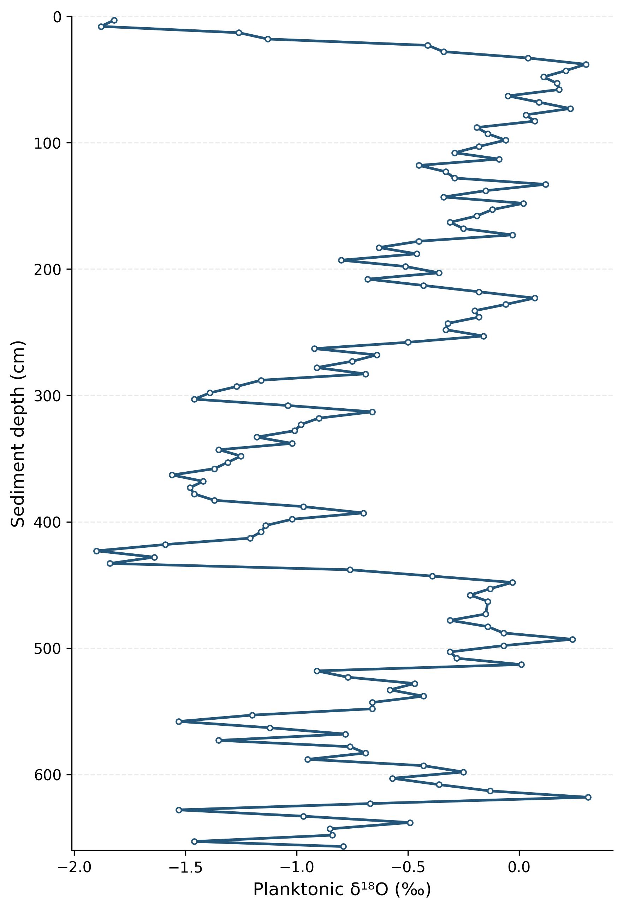

Oxygen Isotope Stratigraphy
Oxygen isotope measurements from marine sediment cores provide information about past oceanographic and climatic conditions. Variations in oxygen isotope ratios reflect several influences, including changes in seawater isotopic composition and temperature.
This investigation uses published planktonic foraminiferal oxygen isotope measurements from sediment core GeoB1515-1 to examine stratigraphic variability throughout the recovered sediment sequence.
Research Objectives
The analysis examines variations in planktonic δ¹⁸O with sediment depth, identifies prominent stratigraphic features, and explores their relationship to Quaternary climate variability.
The isotope record will also provide stratigraphic context for developing an age-depth model using published chronological constraints and reference isotope records.
Data source: Rühlemann et al. (1998), Stable isotopes of sediment core GeoB1515-1. PANGAEA.54617
Oxygen Isotope Depth Profile
The planktonic oxygen isotope record contains 131 measurements spanning sediment depths of 3–657 cm. Variations in δ¹⁸O provide a stratigraphic record influenced by changes in ocean temperature, seawater isotopic composition, and other oceanographic processes.
Planktonic δ¹⁸O
The depth profile illustrates variations in oxygen isotope composition throughout the recovered sediment sequence.

Stratigraphic Observations
The planktonic δ¹⁸O record exhibits substantial variability throughout the sediment sequence, including gradual changes and relatively abrupt isotopic transitions.
Upper Sediment Sequence
The upper portion of the core begins with relatively negative δ¹⁸O values, followed by a pronounced shift toward more positive values within the upper 50 cm.
Middle Sediment Sequence
Between approximately 100 and 400 cm, the isotope record exhibits fluctuations superimposed on broader changes in isotopic composition.
Deeper Sediment Sequence
A prominent isotopic transition occurs between approximately 420 and 450 cm, followed by continued variability toward the base of the core.
Paleoceanographic Interpretation
Oxygen isotope ratios measured in planktonic foraminifera reflect a combination of environmental influences, including seawater temperature, seawater isotopic composition, and changes in global ice volume.
The GeoB1515-1 isotope record therefore provides evidence of changing oceanographic conditions, but individual isotopic excursions cannot be attributed to temperature or ice-volume changes without additional constraints.
Stratigraphic Correlation
The published planktonic isotope record can be compared with established marine isotope stratigraphies to investigate possible glacial–interglacial transitions.
However, the LR04 reference stack is based on benthic foraminiferal δ¹⁸O measurements. Differences in habitat, temperature sensitivity, and regional oceanographic conditions mean that direct alignment with the planktonic GeoB1515-1 record requires caution.
Marine isotope stage assignments and chronological interpretations will be evaluated separately using published age constraints and an age-depth model.